CASCADE 1.0 Analysis - 1 ss models
Stable States Data
In this section, only the boolean models that have 1 stable state will be used in the analysis. All variables of interest (stable state, link-operator parameterization, fitness to steady state, performance MCC score, etc.) will relate only to the 1 stable state models from now on.
To load the stable state data for the models that have 1 stable state use the Zenodo dataset  and the script get_ss_data.R
and the script get_ss_data.R
Parameterization Maps
In this section we present the results of using UMAP (McInnes, Healy, and Melville 2018) on the link-operator parameterization data of the CASCADE 1.0 models with 1 stable state. We created several such parameterization maps by adjusting the n_neighbors parameter input (from \(2\) to \(20\)), which is responsible for the size of the local neighborhood (in terms of number of neighboring sample points) used for the manifold approximation. As the documentation says, larger values result in more global views of the manifold, while smaller values result in more local data being preserved. To get these map images and the reduced dimension dataset, use the script 1ss_models_umap.R for more details.
Note that in all these mappings to the 2D space, models that share similar link-operator parameterization will reside in the same area/cluster in the map. The larger the n_neighbors is, the more the smaller clusters merge into larger ones. The images for \(\ge 14\) n_neighbors are almost exactly the same.
We present some of these maps below:
knitr::include_graphics(path = "img/1ss_umap/1ss_umap_unsup_2.png")
knitr::include_graphics(path = "img/1ss_umap/1ss_umap_unsup_3.png")
Figure 13: 2D Parameterization map for 1 stable state models (2 and 3 neighbors)
knitr::include_graphics(path = "img/1ss_umap/1ss_umap_unsup_5.png")
knitr::include_graphics(path = "img/1ss_umap/1ss_umap_unsup_6.png")
Figure 14: 2D Parameterization map for 1 stable state models (5 and 6 neighbors)
knitr::include_graphics(path = "img/1ss_umap/1ss_umap_unsup_8.png")
knitr::include_graphics(path = "img/1ss_umap/1ss_umap_unsup_11.png")

Figure 15: 2D Parameterization map for 1 stable state models (8 and 11 neighbors)
knitr::include_graphics(path = "img/1ss_umap/1ss_umap_unsup_12.png")
knitr::include_graphics(path = "img/1ss_umap/1ss_umap_unsup_15.png") 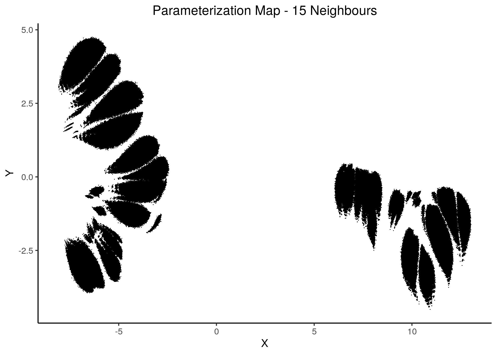
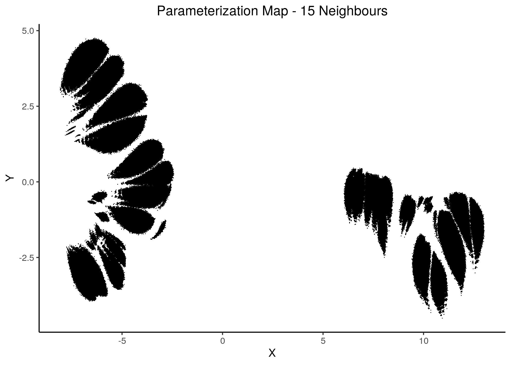
Figure 16: 2D Parameterization map for 1 stable state models (12 and 15 neighbors)
We observe the existence of two large families (superclusters) of parameterization models, especially for more global views of the dataset (\(\text{n_neighbors}\ge 8\)).
Distinct smaller sub-clusters of closely parameterized models also manifest for different number of neighbors, which suggests that there is some order in the parameterization of the 1 stable state models (as exemplified by the UMAP method) across multiple visualization scales.
Gitsbe Models on the Map
Gitsbe uses a genetic algorithm approach to produce boolean models that are fitted to activity-based, biomarker training data.
We used Gitsbe and tested the produced models performance (ensemble-wise drug combination predictions) against synergy data from (Flobak et al. 2015) in another report. The calibrated models performed very well in terms of both ROC and PR-AUC.
Here we want to check whether models produced by a method such as a genetic algorithm-based one have similar parameterization - i.e. they belong in the same neighborhood in the parameterization map.
We will use models from \(1000\) gitsbe simulations, calibrated to steady state (a total of \(3000\) models, choosing the \(3\) best-fit models from each simulation). The results are provided in this data file and to reproduce them, follow the instructions here, keeping the default configuration options for CASCADE 1.0 and changing only the number of simulations to \(1000\)).
All the Gitsbe models had a large fitness to the steady state AGS data (their stable states fitting almost exactly the states of the manually-curated 24 nodes), as it can be seen from the next figure (see gitsbe_models_fit.R):

Figure 17: Gitsbe model fitness to AGS steady state
To generate the next figures (same map, same gitsbe models, different number of neighbors) use the gitsbe_model_embedding.R - all figures are available here:
knitr::include_graphics(path = "img/gitsbe_umaps/2nn.png")
knitr::include_graphics(path = "img/gitsbe_umaps/4nn.png")

Figure 18: Gitsbe models in Parameterization map (2 and 4 neighbors)
knitr::include_graphics(path = "img/gitsbe_umaps/8nn.png")
knitr::include_graphics(path = "img/gitsbe_umaps/14nn.png")
Figure 19: Gitsbe models in Parameterization map (6 and 8 neighbors)
Gitsbe-generated models that fit the biomarker steady state data for the AGS cell line have a diverse structure that spans across the parameterization map but nonetheless appear to gather in smaller parameterization-specific sub-clusters (better seen in the Figure with 14 neighbors which gives a more global view of the dataset).
Observing the distribution of the gitsbe models in the parameterization map, we see that most of them are being placed at one of the two superclusters.
Of course, there are areas in the map that Gitsbe models do not cover, which may as well be high-performance model areas. Since we have generated all possible link-operator models with CASCADE 1.0, we can proceed to generate a performance map (atop the parameterization one) and cross-check if the gitsbe models fall into high-performance areas or not.
Performance Maps
Every model generated via abmlog (Model Stable State Statistics) was tested against the synergy dataset of (Flobak et al. 2015).
Among \(21\) drug combinations, \(4\) were found synergistic in that dataset, namely:
obs_syn = emba::get_observed_synergies(file = "data/observed_synergies_cascade_1.0")
usefun::pretty_print_vector_values(obs_syn, vector.values.str = "synergies")4 synergies: PI-PD, PI-5Z, PD-AK, AK-5Z
Using the drabme software module, we tested every CASCADE 1.0 model against this dataset and got each model’s predictions for each drug combination.
The HSA rule was used to define if a model is synergistic for a particular combination.
The results are available in the Zenodo dataset  , file
, file cascade_1.0_hsa_fixpoints.tar.gz.
As previously said, we are going to use the 1 stable state model predictions only.
We used the emba R package (Zobolas, Kuiper, and Flobak 2020) to perform a biomarker analysis on the 1 stable state models dataset and their predictions from drabme (see script emba_analysis.R).
Part of the results from the emba analysis is the calculation of the Matthews correlation coefficient (MCC) performance score for each model.
We use these MCC model scores to draw the next figures (see mcc_figures.R script)
Splitting all the 1 stable state models to \(4\) MCC classes we can see that a lot of models have performance close to random prediction or even worse:
knitr::include_graphics(path = "img/mcc_hist.png")
knitr::include_graphics(path = "img/mcc_hist2.png")

Figure 20: MCC Classes Histograms
Most of the 1 stable state models have MCC performance close to random or worse, making it thus difficult for any algorithm to find the best performance models (i.e. the 3-4th MCC class models, which amounts to only \(5\%\) of the total number of models with 1 stable state, given the standardized boolean equation parameterization inspired by (Mendoza and Xenarios 2006)).
Unsupervised UMAP
If we draw the parameterization maps for different number of neighbors and color the points/models according to their MCC score, we get these images (to see all figures, check here):
knitr::include_graphics(path = "img/mcc_maps/2nn.png")
knitr::include_graphics(path = "img/mcc_maps/14nn.png")
Figure 21: MCC Parameterization map (2 and 14 neighbors)
We observe that the two large parameterization superclusters (especially outlined by the figures with \(2\) and \(\ge 8\) neighbors) are closely related with the MCC performance metric. Specifically, these 2 superclusters dichotomize the models performance landscape into 2 areas, where only one of them has the majority of good performance models (i.e. those that have an MCC score \(>0\)).
Also, we observe that closely parameterized models tend to have same performance (existence of smaller parameterization clusters of same performance models).
Comparing the corresponding Gitsbe parameterization maps with the MCC maps, we can clearly verify now that the Gitsbe models might not always be the best performing ones (in terms of MCC score) since they appear in both superclusters (and that’s only a first-fine measure for determining performance based on structure) - but at least they tend to be more in the higher performance supercluster.
Reasons why the gitsbe models are not always on the high-performance supercluster can be justified by:
- The nature of the genetic algorithm, which is a heuristic method and as such produces local optima
- The training dataset does not provide enough constraints for the optimization problem, i.e. more steady state nodes are needed to be fitted in the models stable state which will result in models with more strict parameterization patterns
- A combination of the two above
Supervised UMAP
We perform supervised dimension reduction using UMAP on the 1 stable state model dataset. The only difference with the previous performance maps is that we provide UMAP (as an input) the information of the models performance (the MCC score) and not just overlay it (via coloring) afterwards.
The main thing we want to answer here is if UMAP can do a better job placing the models on the map, given additional information about their performance.
We tried UMAP with different number of neighbors (from local to a more global view of the dataset), target weight (weighting factor between data topology (\(0\)) and target/response topology (\(1\)) or somewhere in between) and setting the response either to the MCC score as a continuous, numeric value or to the MCC classes (discrete variable) as shown above. See script mcc_sumap.R for more details.
First, we show some maps, where the response MCC was treated as a continuous variable:
knitr::include_graphics(path = "img/mcc_sumaps/4nn_0w.png")
knitr::include_graphics(path = "img/mcc_sumaps/4nn_0.5w.png")
knitr::include_graphics(path = "img/mcc_sumaps/4nn_1w.png")

Figure 22: MCC Parameterization map (4 neighbors, MCC continuous)
knitr::include_graphics(path = "img/mcc_sumaps/14nn_0.5w.png")
knitr::include_graphics(path = "img/mcc_sumaps/14nn_1w.png")

Figure 23: MCC Parameterization map (14 neighbors, MCC continuous)
knitr::include_graphics(path = "img/mcc_sumaps/20nn_0.5w.png")
knitr::include_graphics(path = "img/mcc_sumaps/20nn_1w.png")

Figure 24: MCC Parameterization map (20 neighbors, MCC continuous)
Very artistic and knotty figures! UMAP achieves some sort of distinction between the different MCC values, especially when the topology is heavily based on the response MCC value (target weight is \(1\))
Next, we show some maps, where the response MCC was treated as a categorical variable, denoting the MCC class the models belong to (higher the better):
knitr::include_graphics(path = "img/mcc_sumaps/class/4nn_0.5w_class.png")
knitr::include_graphics(path = "img/mcc_sumaps/class/6nn_0.5w_class.png")
Figure 25: MCC Parameterization map (4 and 6 neighbors, MCC Classes)
knitr::include_graphics(path = "img/mcc_sumaps/class/8nn_0.5w_class.png")
knitr::include_graphics(path = "img/mcc_sumaps/class/10nn_0.5w_class.png")

Figure 26: MCC Parameterization map (8 and 10 neighbors, MCC Classes)
knitr::include_graphics(path = "img/mcc_sumaps/class/14nn_0w_class.png")
knitr::include_graphics(path = "img/mcc_sumaps/class/14nn_0.5w_class.png")
knitr::include_graphics(path = "img/mcc_sumaps/class/14nn_1w_class.png")

Figure 27: MCC Parameterization map (14 neighbors, MCC Classes)
We observe that the higher the number of neighbors is (\(\ge 10\) with a balanced target weight of \(0.5\)), the better UMAP classifies the models to distinct (super-) clusters representing the different MCC classes.
Performance vs Fitness
We try to see if there is any correlation between performance (MCC) and fitness to the AGS steady state.
We study two AGS steady states: one with a total of \(24\) nodes which is the result of manual literature curation (S4 Table in Flobak et al. (2015)) and serves as the gold-standard, and one with all \(77\) nodes, which is the single (and only) fixpoint of the AGS boolean model in Flobak et al. (2015).
Note that second, larger steady state reports the same activity values for the common \(24\) nodes as the first one.
Use the fit_figures.R script to reproduce the figures for the literature-curated steady state and the fit_vs_performance_ags_pub.R for the AGS model fixpoint/steady state.
First, we check if the fitness density of all 1 stable state models covers the whole fitness spectrum:
knitr::include_graphics(path = "img/1ss_models_fit_density.png")
knitr::include_graphics(path = "img/1ss_models_fit_density_pub.png") 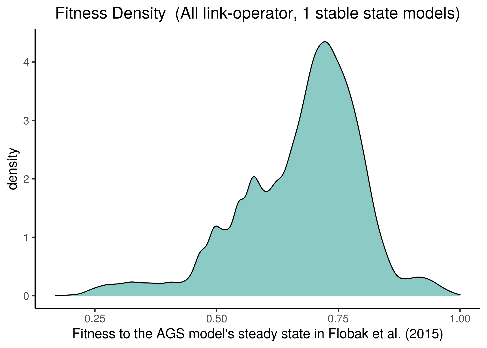
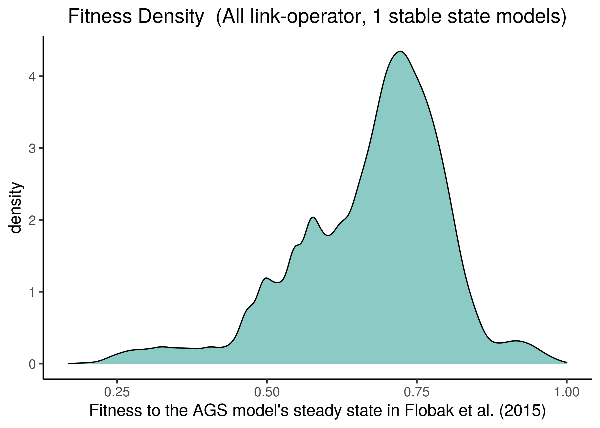
Figure 28: All 1 stable state models fitness to AGS steady state(s)
The Pearson correlation between the two fitness vectors is high:
fit_data = readRDS(file = "data/fit_data.rds")
fit_data_pub = readRDS(file = "data/fit_data_pub.rds")
# data check
stopifnot(all(names(fit_data) == names(fit_data_pub)))
# Pearson correlation
cor(x = fit_data, y = fit_data_pub, method = "pearson") %>% round(digits = 2)[1] 0.94
We observe that most of the models have at least half of the nodes in the same state as in the AGS steady state, no matter which steady state we fit the stable state data against. This makes the fitness score distribution skewed towards the higher fitness values.
Of course, though the two steady states completely agree on the values of the \(24\) nodes, it might be that the rest of the nodes have slightly different activity state values from the ones found in the fixpoint attractor of the AGS model in Flobak et al. (2015). If that is the case in reality, the fitness distribution might be more uniform.
We follow the same classification scheme as above, i.e. splitting the 1 stable models to \(4\) MCC classes and comparing the fitness scores between these classes:
knitr::include_graphics(path = "img/mcc_vs_fit.png")
knitr::include_graphics(path = "img/mcc_vs_fit_pub.png") 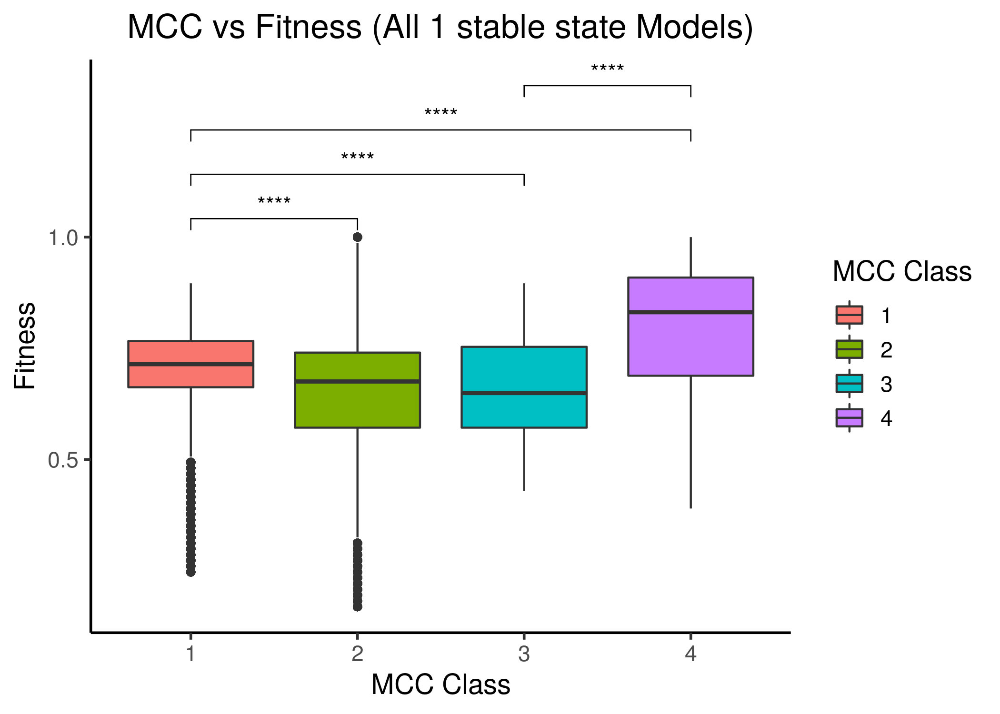
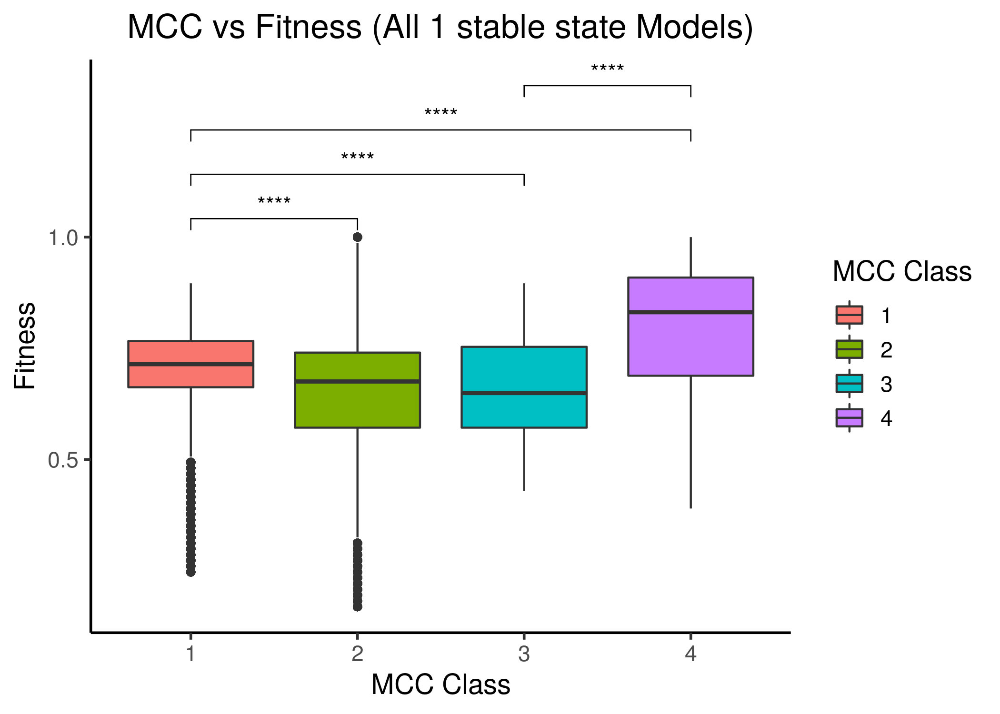
Figure 29: MCC performance vs Fitness to AGS steady state(s) for all 1 stable state models. Left is fitness to the AGS-curated steady state (24 nodes), right is for the full, 77-node steady state.
The last MCC class has a statistically significant higher median fitness to the AGS steady state compared to all other lower MCC classes, even though the correlation between fitness and performance is not linear and most of the models have a fitness higher than \(0.5\). Note also that models that have significantly lower than \(0.5\) fitness in each steady state case, belong to the first two, lower performance classes.
The last two figures points us to the fact that more constraints are needed for the fitness calculation of the Gitsbe genetic algorithm or any other for that matter (i.e. more literature-curated nodes in the AGS steady state - now only \(24/77=31\%\) is included) in order to define more restrictive parameterized models that would allow a much more uniform fitness density spectrum (or at least not skewed towards the higher fitness values). Such fitness spectrum would (hopefully) allow for more granularity in the corresponding performance behavior between the different MCC classes, and thus more distinctive correlation.
Fitness Maps
If we draw the parameterization maps for different number of neighbors and color the points/models according to their fitness to the AGS steady state (24 nodes), we get these images (see fit_figures.R script):
knitr::include_graphics(path = "img/fit_maps/2nn.png")
knitr::include_graphics(path = "img/fit_maps/4nn.png")

Figure 30: Fitness Parameterization map (2 and 4 neighbors)
knitr::include_graphics(path = "img/fit_maps/11nn.png")
knitr::include_graphics(path = "img/fit_maps/14nn.png")Figure 31: Fitness Parameterization map (11 and 14 neighbors)
Higher fitness models manifest in both superclusters, suggesting again the need for more literature-curated nodes in the training data (AGS steady state). Also, closely parameterized models tend to have same fitness (existence of smaller parameterization clusters of same fitness models).
No apparent correlation can be observed between fitness and performance (MCC) maps.
Performance biomarkers
We assess important nodes (biomarkers) whose activity and/or link-operator (parameterization) affects the models performance in terms of the achieved MCC score.
emba biomarkers
We use the emba results with \(4\) MCC classes (see script emba_analysis.R and MCC classification histograms above).
What emba (Zobolas, Kuiper, and Flobak 2020) does is to group the models to \(4\) MCC Classes and compare the average stable state activities and link operator values for each node between every possible pair of MCC classes.
Nodes that have higher average differences (either positively or negatively and between any comparison pair) are considered as more important and are thus annotated as biomarkers based on a given threshold.
In the next heatmap, a positive (resp. negative) state difference for a node denotes that its activity value was larger (resp. lower) in the higher MCC class of the corresponding comparison pair:
mcc_res = readRDS(file = "data/emba_mcc_res/mcc_4_res.rds")
# color some important nodes and lower the threshold
activity_biomarkers = emba::get_biomarkers(mcc_res$diff.state.mcc.mat, threshold = 0.48)
imp_nodes_colors = rep("black", ncol(mcc_res$diff.state.mcc.mat))
names(imp_nodes_colors) = colnames(mcc_res$diff.state.mcc.mat)
imp_nodes_colors[names(imp_nodes_colors) %in% activity_biomarkers$biomarkers.pos] = "green4"
imp_nodes_colors[names(imp_nodes_colors) %in% activity_biomarkers$biomarkers.neg] = "red4"
# define coloring function of state differences
col_fun = circlize::colorRamp2(c(min(mcc_res$diff.state.mcc.mat), 0, max(mcc_res$diff.state.mcc.mat)),
c("red", "white", "green"))
set.seed(42)
state_heat = ComplexHeatmap::Heatmap(matrix = mcc_res$diff.state.mcc.mat,
name = "State Difference", col = col_fun,
row_title = "MCC Classes Pairs", row_names_side = "left",
row_title_side = "left", row_dend_side = "right",
column_title = "Average State Differences between MCC Classes",
column_names_gp = gpar(fontsize = 6, col = imp_nodes_colors),
heatmap_legend_param = list(direction = "horizontal"))
biomarkers_legend = Legend(title = "Activity State Biomarkers",
labels = c("Active", "Inhibited"),
legend_gp = gpar(fill = c("green4", "red4")))
draw(state_heat, annotation_legend_list = biomarkers_legend,
heatmap_legend_side = "bottom", annotation_legend_side = "bottom",
merge_legend = TRUE)Figure 32: Heatmap of Average State Differences (emba, 4 MCC Classes)
So, the following nodes are identified as active biomarkers (they tend to be active in the higher performance models):
7 nodes: MAP3K7, GRAP2, MAP2K7, MAP2K3, TAB_f, ERK_f, NLK
and the following as inhibited biomarkers:
1 node: MAPK14
Note that some nodes tend to have either no actual state differences between the MCC classes (so they are not important) or they take both negative and positive differences between the different MCC class pair comparisons (without surpassing the given threshold, so also not important for us here).
# color some important nodes and lower the threshold
param_biomarkers = emba::get_biomarkers(mcc_res$diff.link.mcc.mat, threshold = 0.48)
imp_nodes_colors = rep("black", ncol(mcc_res$diff.link.mcc.mat))
names(imp_nodes_colors) = colnames(mcc_res$diff.link.mcc.mat)
imp_nodes_colors[names(imp_nodes_colors) %in% param_biomarkers$biomarkers.pos] = "green4"
imp_nodes_colors[names(imp_nodes_colors) %in% param_biomarkers$biomarkers.neg] = "red4"
# define coloring function of state differences
col_fun = circlize::colorRamp2(c(min(mcc_res$diff.link.mcc.mat), 0, max(mcc_res$diff.link.mcc.mat)),
c("red", "white", "green"))
set.seed(42)
state_heat = ComplexHeatmap::Heatmap(matrix = mcc_res$diff.link.mcc.mat,
name = "LO Difference", col = col_fun,
row_title = "MCC Classes Pairs", row_names_side = "left",
row_title_side = "left", row_dend_side = "right",
column_title = "Average Link Operator Differences between MCC Classes",
column_names_gp = gpar(fontsize = 11, col = imp_nodes_colors),
heatmap_legend_param = list(direction = "horizontal"))
biomarkers_legend = Legend(title = "Link Operator Biomarkers",
labels = c("OR-NOT (1)", "AND-NOT (0)"),
legend_gp = gpar(fill = c("green4", "red4")))
draw(state_heat, annotation_legend_list = biomarkers_legend,
heatmap_legend_side = "bottom", annotation_legend_side = "bottom",
merge_legend = TRUE)
Figure 33: Heatmap of Average Link Operator Differences (emba, 4 MCC Classes)
We observe that ERK_f will have the OR-NOT link operator in most of the higher performance models and the MAPK14 the AND-NOT link operator.
This of course relates to the fact that these nodes were found also as active and inhibited biomarkers respectively and that they have a very large observed agreement between stable state activity value and link operator parameterization (see analysis here).
Interestingly, these two nodes (ERK_f and MAPK14) were 2 of the top most important nodes influencing the change of dynamics (number of attractors) in the link operator parameterization space of the CASCADE 1.0 network.
Random Forest biomarkers
We use the ranger R package (Wright and Ziegler 2017) to find important nodes/variables that determine the difference in performance (MCC score) between the input models.
Both the stable state data as well the link operator parameterization data will be used as training sets (see the script perf_biomarkers_ranger.R).
ranger_ss_mcc_res = readRDS(file = "data/ss_mcc_ranger_res.rds")
imp_ss_rf = tibble(nodes = names(ranger_ss_mcc_res$variable.importance),
gini_index = ranger_ss_mcc_res$variable.importance)
# color first 12 nodes in x axis
imp_col = c(rep("green4", 14), rep("grey30", nrow(imp_ss_rf) - 14))
imp_ss_rf %>%
mutate(nodes = forcats::fct_reorder(nodes, desc(gini_index))) %>%
ggplot(aes(x = nodes, y = gini_index, fill = gini_index)) +
geom_bar(stat = "identity", show.legend = FALSE) +
scale_fill_gradient(low = "steelblue", high = "red") +
theme_classic(base_size = 14) +
theme(axis.text.x = element_text(angle = 90, size = 7, colour = imp_col)) +
labs(title = "RF Importance for MCC Classification (stable states)",
x = "Nodes", y = "Mean Decrease in Node Impurity")Figure 34: Random Forest Important Nodes for Performance Classification (MCC) based on stable state data
We observe a lot of common important activity biomarkers (important nodes) between the random forest results and the emba results: ERK_f,MAP3K7,MAP2K7,NLK,TAB_f to name a few.
ranger_lo_mcc_res = readRDS(file = "data/lo_mcc_ranger_res.rds")
imp_lo_rf = tibble(nodes = names(ranger_lo_mcc_res$variable.importance),
gini_index = ranger_lo_mcc_res$variable.importance)
# color first 8 nodes in x axis
imp_col = c(rep("green4", 8), rep("grey30", nrow(imp_lo_rf) - 8))
imp_lo_rf %>%
mutate(nodes = forcats::fct_reorder(nodes, desc(gini_index))) %>%
ggplot(aes(x = nodes, y = gini_index, fill = gini_index)) +
geom_bar(stat = "identity", show.legend = FALSE) +
scale_fill_gradient(low = "steelblue", high = "red") +
theme_classic(base_size = 14) +
theme(axis.text.x = element_text(angle = 90, size = 12, colour = imp_col)) +
labs(title = "RF Importance for MCC Classification (parameterization)",
x = "Nodes", y = "Mean Decrease in Node Impurity")
Figure 35: Random Forest Important Nodes for Performance Classification (MCC) based on link operator data)
ERK_f is a major link operator biomarker in both emba and random forest results
emba vs RF Results
We check the correlation between emba (sum of absolute state differences for all comparison pairs per node, i.e. summing up the absolute values of the columns in the heatmaps above) and random forest (Gini Index) results:
# compute total emba importance
imp_ss_emba = mcc_res$diff.state.mcc.mat %>% abs() %>% colSums()
imp_lo_emba = mcc_res$diff.link.mcc.mat %>% abs() %>% colSums()
# make sure it's in the same order
imp_ss_emba = imp_ss_emba[imp_ss_rf %>% pull(nodes)]
imp_lo_emba = imp_lo_emba[imp_lo_rf %>% pull(nodes)]
imp_ss_rf %>% add_column(emba_score = imp_ss_emba) %>%
ggplot(aes(x = emba_score, y = gini_index)) +
geom_point() +
geom_smooth(formula = y ~ x, method = "lm") +
ggpubr::stat_cor(method = "kendall", cor.coef.name = "tau") +
theme_classic() +
labs(title = "Random Forest vs emba variable importance results (Activity State)",
x = "emba (Sum of absolute state differences)", y = "RF (Gini Index)")
imp_lo_rf %>% add_column(emba_score = imp_lo_emba) %>%
ggplot(aes(x = emba_score, y = gini_index)) +
geom_point() +
geom_smooth(formula = y ~ x, method = "lm") +
ggpubr::stat_cor(method = "kendall", cor.coef.name = "tau") +
theme_classic() +
labs(title = "Random Forest vs emba variable importance results (Parameterization)",
x = "emba (Sum of absolute link operator differences)", y = "RF (Gini Index)")Figure 36: Correlation between emba and Random Forest Importance Results
- We use the non-parametric Kendall correlation method and it’s rank-based correlation coefficient, \(\tau\).
- There is a correlation between the importance results from the two different methods, even though the
embaresults are more artificially-made (like adding up absolute coefficient scores from linear models as a measure of importance) compared to the impurity metric which is a built-in feature of the tree-based algorithms such as random forests. As a result for example, we observe a much greater granularity of the importance measurements in the activity state correlation figure. embaresults are more verbose though in the sense that they allow directionality in their interpretation: we get which nodes must be activated or inhibited in the higher performance models or which should be parameterized withOR-NOTorAND-NOT, information which the random forests do not provide.- Larger correlation is observed for the activity state compared to the parameterization results.
Embedding Link Operator Biomarkers in the Map
Using as a base the performance parameterization maps (supervised and unsupervised) for the 1 stable state models, we color the points (models) according to the link operator value of some of the performance biomarker that we found in the previous analysis using emba and random forests.
We give some examples of how the distribution of link-operator values looks like in the parameterization maps for the more important nodes (e.g. ERK_f, MAPK14) but also for the least important ones (e.g. CYCS, CFLAR).
See the script perf_biomarkers_embedding.R for more details.
All the produced images by the script are accessible here.
Using as a base the unsupervised parameterization MAP with 14 neighbors, we have:
knitr::include_graphics(path = "img/nodes_lo_maps/unsup_MAPK14.png")
knitr::include_graphics(path = "img/nodes_lo_maps/unsup_ERK_f.png")
knitr::include_graphics(path = "img/nodes_lo_maps/unsup_CFLAR.png")
knitr::include_graphics(path = "img/nodes_lo_maps/unsup_CYCS.png")

 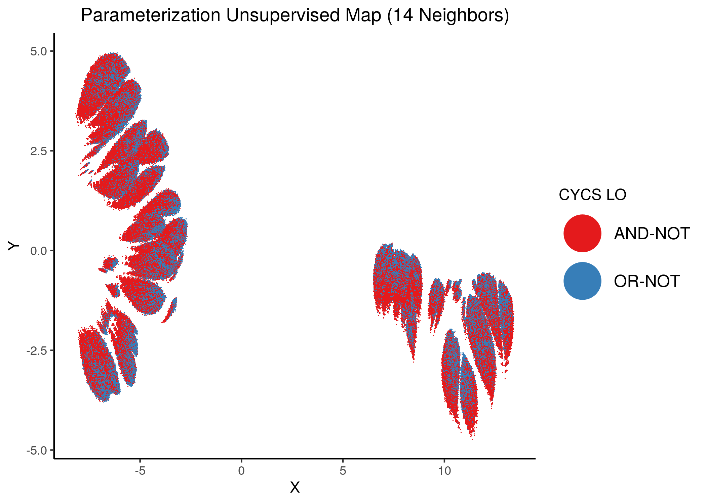
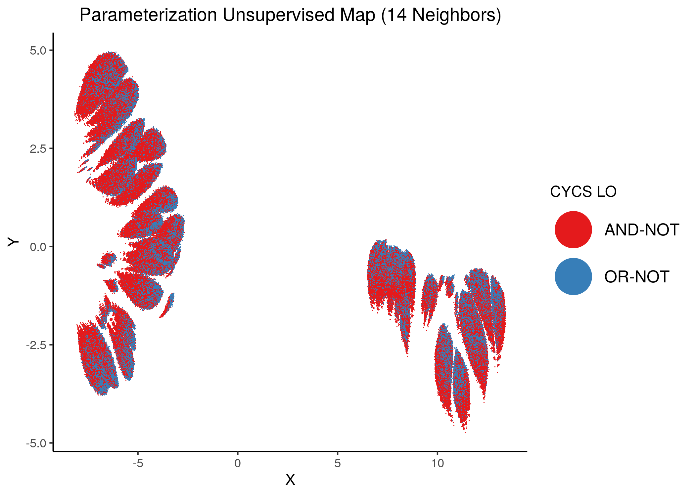
Figure 37: MCC Unsupervised Parameterization maps colored by link-operator values of different performance biomarkers
Using as a base the supervised parameterization MAP with 14 neighbors (MCC as continuous variable), we have:
knitr::include_graphics(path = "img/nodes_lo_maps/sup_cont_MAPK14.png")
knitr::include_graphics(path = "img/nodes_lo_maps/sup_cont_ERK_f.png")
knitr::include_graphics(path = "img/nodes_lo_maps/sup_cont_CFLAR.png")
knitr::include_graphics(path = "img/nodes_lo_maps/sup_cont_CYCS.png") 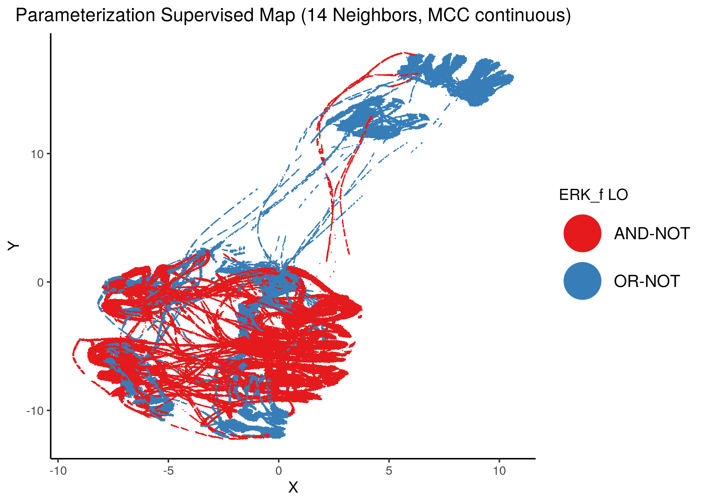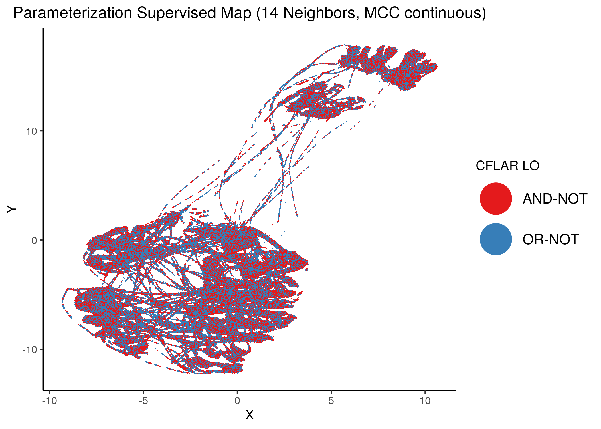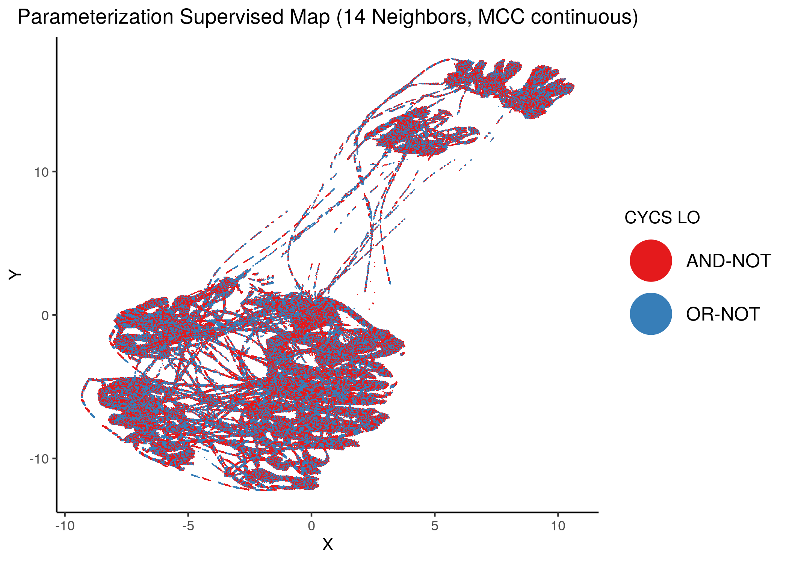
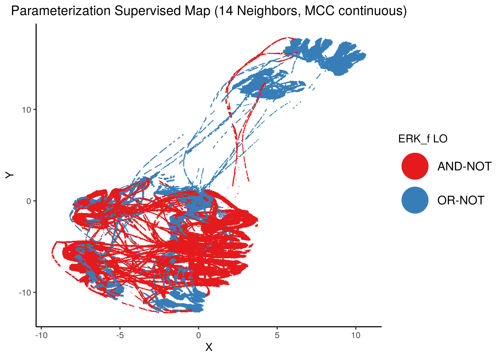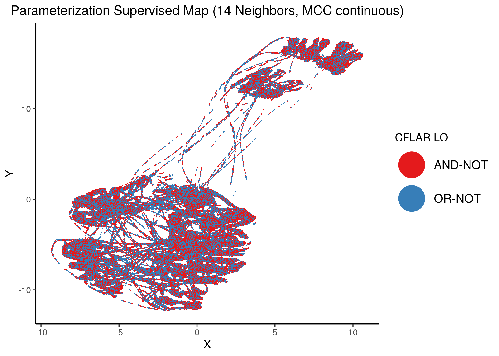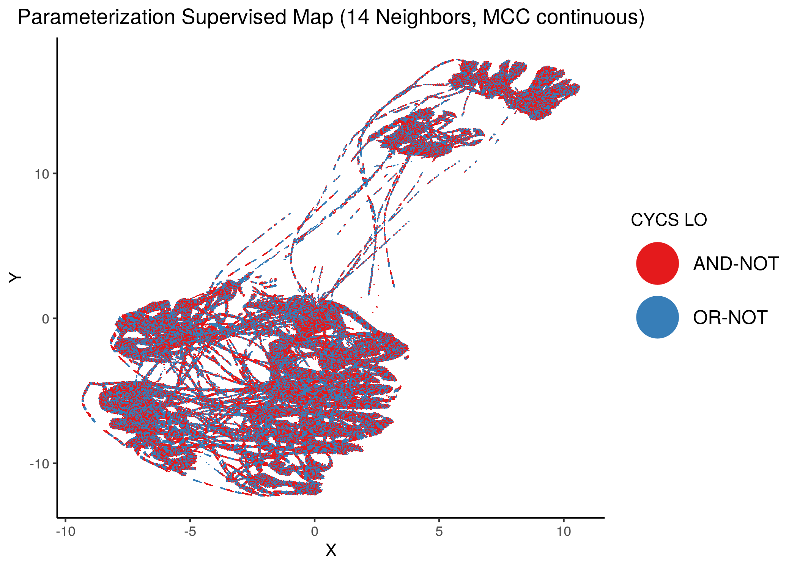
Figure 38: MCC Supervised Parameterization maps (MCC continuous) colored by link-operator values of different performance biomarkers
Using as a base the supervised parameterization MAP with 14 neighbors (MCC as discrete class variable), we have:
knitr::include_graphics(path = "img/nodes_lo_maps/sup_MAPK14.png")
knitr::include_graphics(path = "img/nodes_lo_maps/sup_ERK_f.png")
knitr::include_graphics(path = "img/nodes_lo_maps/sup_CFLAR.png")
knitr::include_graphics(path = "img/nodes_lo_maps/sup_CYCS.png") 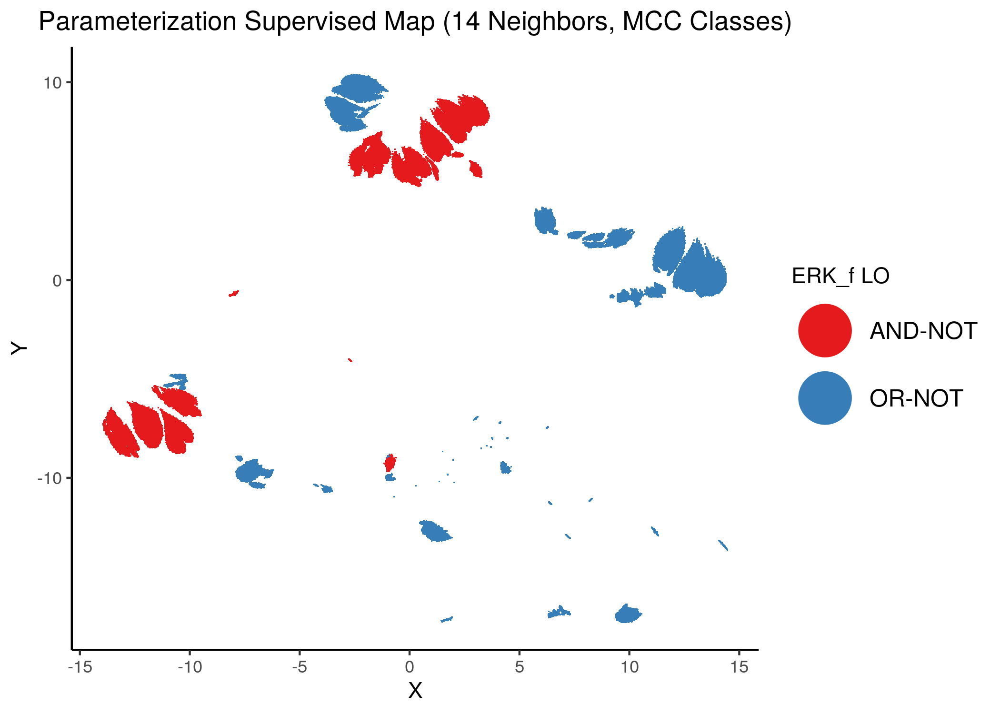
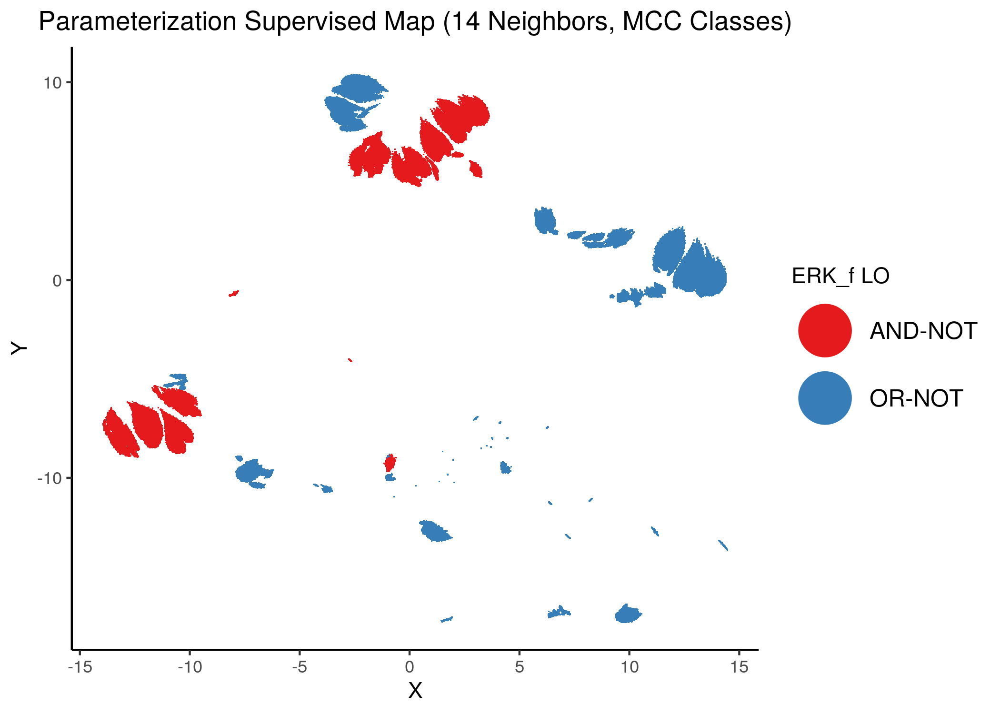

Figure 39: MCC Supervised Parameterization maps (MCC discrete) colored by link-operator values of different performance biomarkers
We observe that both in the unsupervised parameterization maps and the MCC-supervised ones (especially the continuous one), the less important a node is, the more chaotically it’s link operator value manifests across the map.
Synergy Maps
As stated in a previous section, the CASCADE 1.0 models produced by abmlog were tested for synergy against the drug combination dataset in Flobak et al. (2015).
Using the HSA method to define a drug combination as synergistic or not (antagonistic), we first present some useful statistics (see script synergy_maps.R):

Figure 40: Synergy Statistics across all CASCADE 1.0 models with 1 stable state
For the ‘NA’ models, either one of the two single-drug perturbed models or the double-perturbed model, did not have any fixpoint attractors.
We observe that only a very few models (compared to the total parameterization space) can predict the observed drug combinations as synergistic. This can be visualized also in the next synergy maps:
knitr::include_graphics(path = "img/synergy_maps/AK-5Z_2nn.png")
knitr::include_graphics(path = "img/synergy_maps/AK-5Z_14nn.png")
Figure 41: AK-PZ Synergy Parameterization Maps
knitr::include_graphics(path = "img/synergy_maps/PD-AK_2nn.png")
knitr::include_graphics(path = "img/synergy_maps/PD-AK_14nn.png") 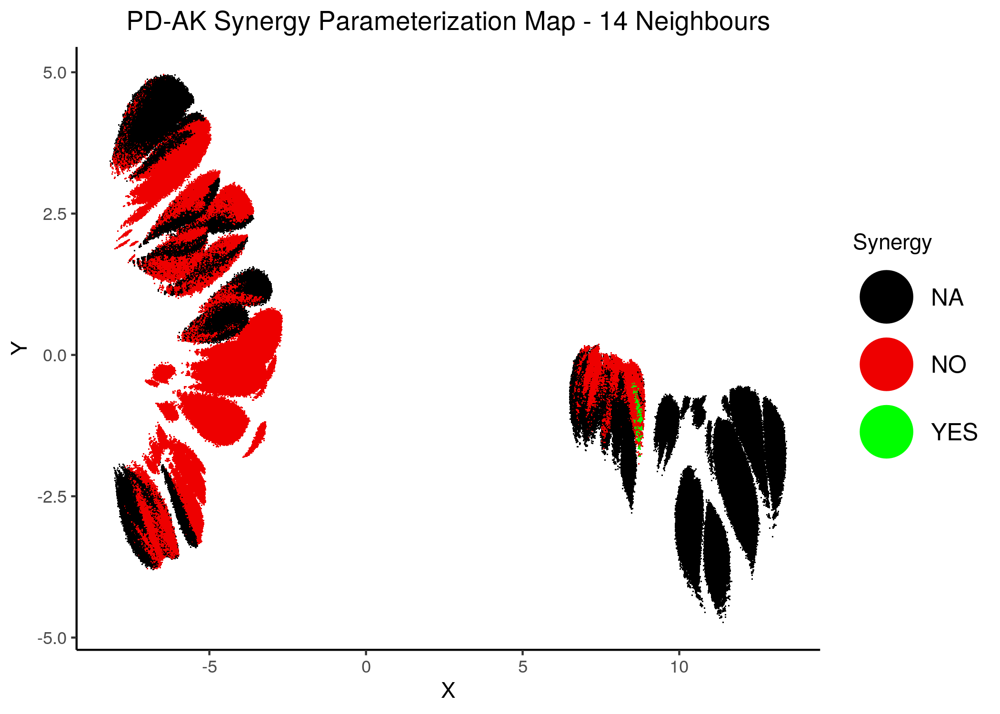
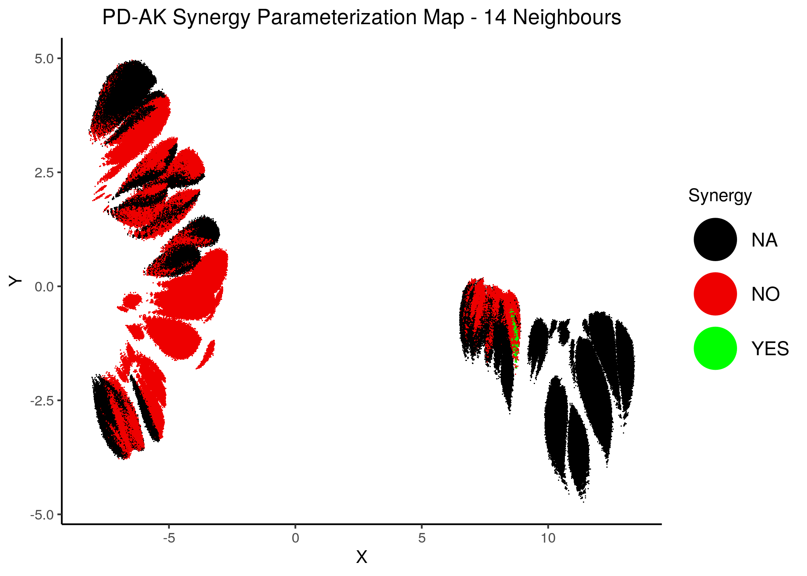
Figure 42: PD-AK Synergy Parameterization Maps
knitr::include_graphics(path = "img/synergy_maps/PI-PD_2nn.png")
knitr::include_graphics(path = "img/synergy_maps/PI-PD_14nn.png") 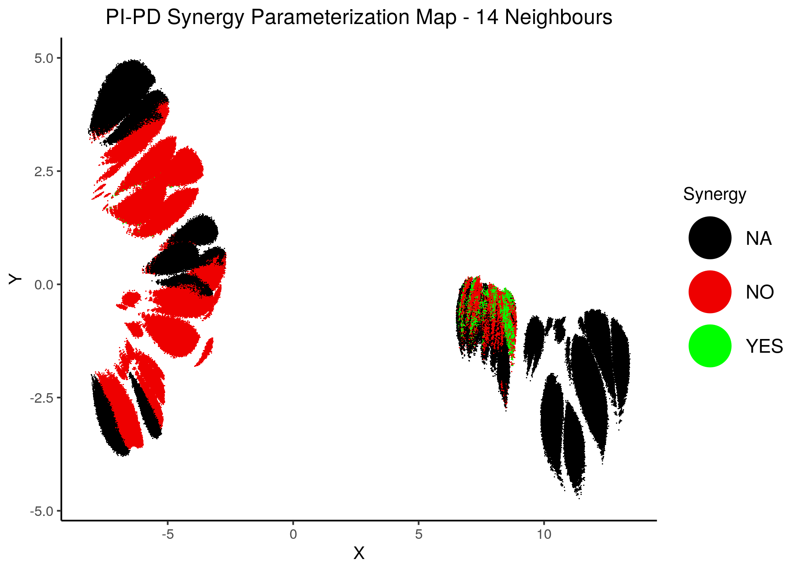
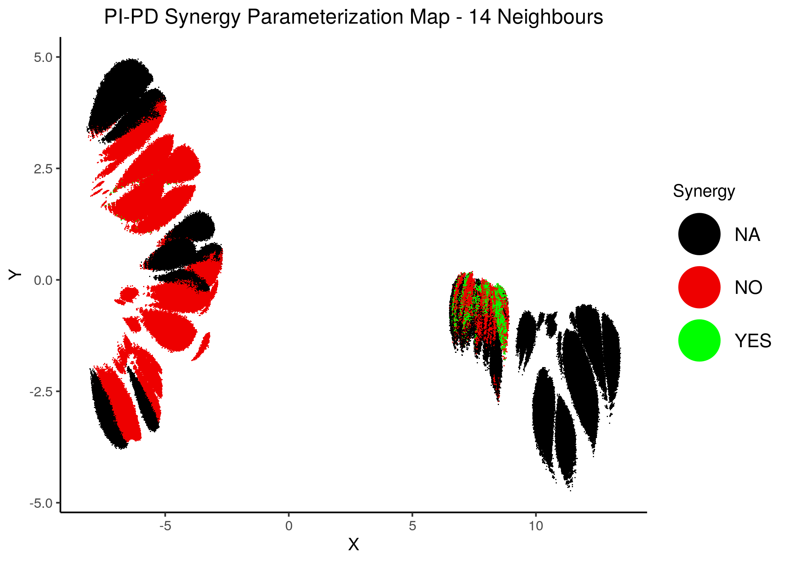
Figure 43: PI-PD Synergy Parameterization Maps
knitr::include_graphics(path = "img/synergy_maps/PI-5Z_2nn.png")
knitr::include_graphics(path = "img/synergy_maps/PI-5Z_14nn.png")

Figure 44: PI-PZ Synergy Parameterization Maps
As we have seen, the UMAP results with higher number of neighbors cluster the similarly parameterized models better. This makes it easier to spot the small clusters which include models that can predict each of the respective observed synergies as synergistic.
We note that all of these synergistic sub-clusters are part of the high-performance supercluster (right one in the images above).
Interestingly, if we see consider all possible observed synergy subsets we see that there are models that can predict the double synergy set PI-PD,PD-AK and the PI-5Z,AK-5Z, but there is literally no model that can predict three or four (all) of the observed synergies:
synergy_subset_stats = readRDS(file = "data/synergy_subset_stats.rds")
usefun::pretty_print_vector_names_and_values(synergy_subset_stats): 2675360, PI-PD: 59616, PI-5Z: 31968, PD-AK: 1536, AK-5Z: 85248, PI-PD,PD-AK: 1536, PI-5Z,AK-5Z: 31968
This is another proof that this parameterization is restrictive since there is not even one possible parameterization which represents biological reality (i.e. treatment with the previously mentioned four drug combinations is synergistic).
Also, looking at the numbers of models for each set of synergies, we see that the models predicting the PD-AK synergy form a proper subset of the PI-PD,PD-AK models and the same for PI-5Z and PI-5Z,AK-5Z.
Thus we include only the parent sets in the next synergy maps, where we have combined all synergies in one:
knitr::include_graphics(path = "img/synergy_maps/all_syn_11nn.png")
knitr::include_graphics(path = "img/synergy_maps/all_syn_14nn.png")Figure 45: Combined Synergy Parameterization Maps
We observe that there are two synergy sub-clusters, one primarily related to the PD drug and the other to the 5Z drug.
Since the synergies belong to \(2\) mutually exclusive (in terms of parameterization) clusters, this is a visual cue that there cannot be a model that predicts all 4 of these synergies.
Stable State Patterns in Synergistic models
We want to identify if there are activity patterns in the models that predict the observed synergies.
To do this, we take a random sample of such synergistic models that predict each of the \(4\) observed synergies and show the corresponding heatmaps of stable state activities. More details on the synergy_heatmaps.R script.
Figure 46: PD-AK stable state activity heatmap
Figure 47: PI-PD stable state activity heatmap
- All the models that predict the
PD-AKsynergy show one distinct activity state pattern - The
PI-PDheatmap is more heterogeneous (though still patterns do exist). The reason for this might be because the parameterization is more spread out across the map in the combined synergy figure above - i.e. some models are in the low-performance supercluster.
Figure 48: AK-5Z stable state activity heatmaps
Figure 49: PI-5Z stable state activity heatmaps
All the synergistic models in the 5Z sub-cluster seem to follow the same stable state activity patterns (pretty much we get the same node names in the columns after the clustering in the heatmaps).
There exist \(2\) main such patterns, specified by the state vector (ON,{ON/OFF},{OFF/ON},ON) - where ON and OFF denote vectors of active/inhibited nodes that are clustered together.
Note that in all \(4\) heatmaps above, the Prosurvival node is always active, denoting proliferating activity patterns in the boolean models where synergies can manifest.
Synergy Biomarkers
We assess important nodes (biomarkers) whose activity and/or link-operator (parameterization) affects the manifestation of the \(4\) observed synergies.
Here, emba (Zobolas, Kuiper, and Flobak 2020) performs the classification to synergistic and antagonistic model groups per synergy observed (as exemplified by the figure above - the NA models are discarded) and compares the average stable state activities and link operator values of each node in the two groups.
In the next heatmap, a positive (resp. negative) state difference for a node denotes that its activity value was larger (resp. lower) in the corresponding synergistic model group:
syn_res = readRDS(file = "data/synergy_res.rds")
# define coloring function of state differences
col_fun = circlize::colorRamp2(c(min(syn_res$diff.state.synergies.mat),
0, max(syn_res$diff.state.synergies.mat)), c("red", "white", "green"))
set.seed(42)
state_syn_heat = ComplexHeatmap::Heatmap(matrix = syn_res$diff.state.synergies.mat,
name = "State Difference", col = col_fun,
row_title = "Synergistic Drug Combinations", row_names_side = "left",
row_title_side = "left", row_dend_side = "right",
column_title = "Average State Differences (Synergistic vs Antagonistic)",
column_names_gp = gpar(fontsize = 5),
heatmap_legend_param = list(direction = "horizontal"))
biomarkers_legend = Legend(title = "Activity State Biomarkers",
labels = c("Active", "Inhibited"),
legend_gp = gpar(fill = c("green4", "red4")))
draw(state_syn_heat, annotation_legend_list = biomarkers_legend,
heatmap_legend_side = "bottom", annotation_legend_side = "bottom",
merge_legend = TRUE)Figure 50: Heatmap of Average State Differences between synergistic and antagonistic model groups for each observed synergy
- The activity state biomarkers are clustered in two categories representing the two synergy sub-clusters we found previously, namely the
5Zsub-cluster and thePDsub-cluster. - The models predicting the
5Zsynergies seem to have more active state biomarkers, whereas the models predicting thePDsynergies seem to have more inhibited state biomarkers. MAPK14seems to be a definitive node distinguishing the two synergy subgroups, since it’s a strong inhibited biomarker for the5Zsynergies, but a fairly unimportant node for thePDsynergies.ERK_fis an active state biomarker (same observation was found in the performance biomarkers analysis)
In the next heatmap, a positive (resp. negative) link operator difference for a node denotes that its link operator was mostly OR-NOT (resp. AND-NOT) in the corresponding synergistic model group:
# define coloring function of state differences
col_fun = circlize::colorRamp2(c(min(syn_res$diff.link.synergies.mat),
0, max(syn_res$diff.link.synergies.mat)), c("red", "white", "green"))
set.seed(42)
lo_syn_heat = ComplexHeatmap::Heatmap(matrix = syn_res$diff.link.synergies.mat,
name = "Link Operator Difference", col = col_fun,
row_title = "Synergistic Drug Combinations", row_names_side = "left",
row_title_side = "left", row_dend_side = "right",
column_title = "Average Link Operator Differences (Synergistic vs Antagonistic)",
column_names_gp = gpar(fontsize = 11),
heatmap_legend_param = list(direction = "horizontal"))
biomarkers_legend = Legend(title = "Link Operator Biomarkers",
labels = c("OR-NOT (1)", "AND-NOT (0)"),
legend_gp = gpar(fill = c("green4", "red4")))
draw(lo_syn_heat, annotation_legend_list = biomarkers_legend,
heatmap_legend_side = "bottom", annotation_legend_side = "bottom",
merge_legend = TRUE)Figure 51: Heatmap of Average Link Operator Differences between synergistic and antagonistic model groups for each observed synergy
ERK_fis a strong synergy OR-NOT biomarker for all synergies (same as in the performance link-operator biomarkers section and shown in this figure)MAPK14is again the node that mostly distinguishes between the two synergy sub-clusters ofPDand5Z. This also relates to the embedding of theMAPK14link-operator value as demonstrated by this figure, where theMAPK14node has theOR-NOTlink-operator in thePDsub-cluster andAND-NOTin the5Zsub-cluster.